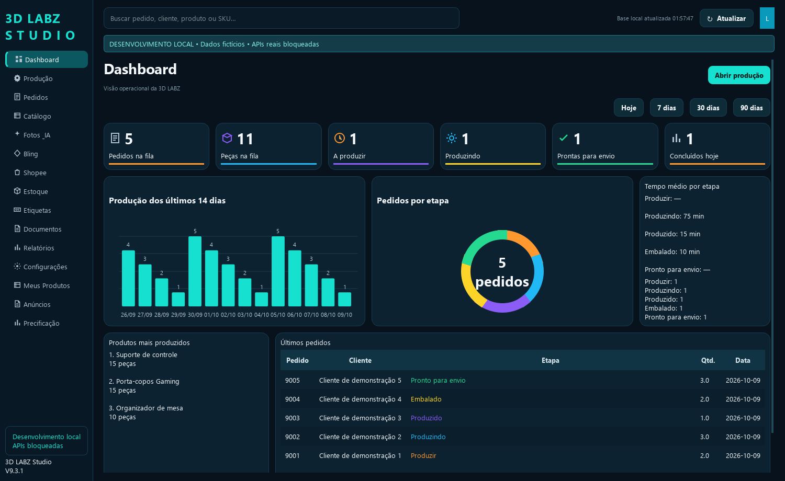

STUDIO
Catálogo, pedidos e produção em um só lugar.
O 3D LABZ Studio organiza a operação de uma loja de produtos impressos em 3D. A interface reúne catálogo, fila de produção, estoque, imagens, documentos e acompanhamento dos pedidos.
Produtos e imagens
Catálogo com SKUs, variações, preços, estoque e edição de imagens com IA configurada pelo usuário.
Pedidos e produção
Acompanhamento de etapas, quantidades, histórico, notas e etiquetas, com integração Bling.
Conector Shopee
Autorização da loja e consulta de pedidos pela Open Platform. Integração em validação; acesso à loja real depende da aprovação Live.

Interface de demonstração com dados fictícios.
Como a autorização funciona
O vendedor inicia a conexão no programa Windows e autoriza a loja na página oficial da Shopee. Este site recebe o retorno temporário para que o usuário conclua a conexão no aplicativo. As credenciais da API e os tokens são armazenados no computador pelo programa, com proteção DPAPI.
Este site é uma apresentação do aplicativo e um retorno de autorização. Não oferece login próprio, não recebe senhas e não executa a operação da loja pelo navegador.